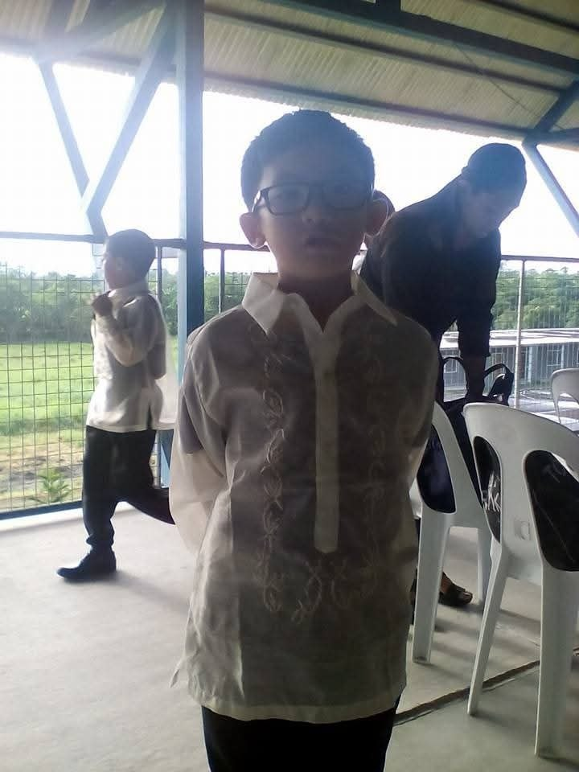
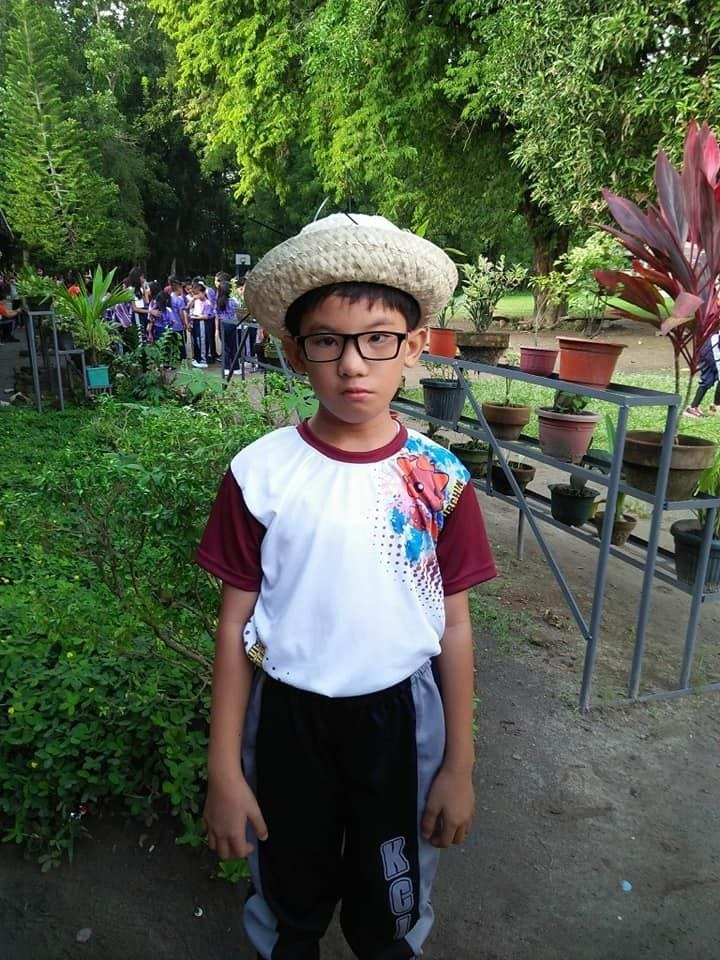

Let me introduce myself
About MeMy name is Christian Lauron. I am 18 years old and I live in Isulan. I have two brothers. I was born with a disability that is called Speech Impairment. My hobbies are playing video games, watching films, writing stories, programming, and learning new things. At the start, I was constantly being bullied for my disability. That led me to be insecure. But I have learned to embrace my uniqueness and focus on my strengths. One of my core strengths is my faith in God. |

